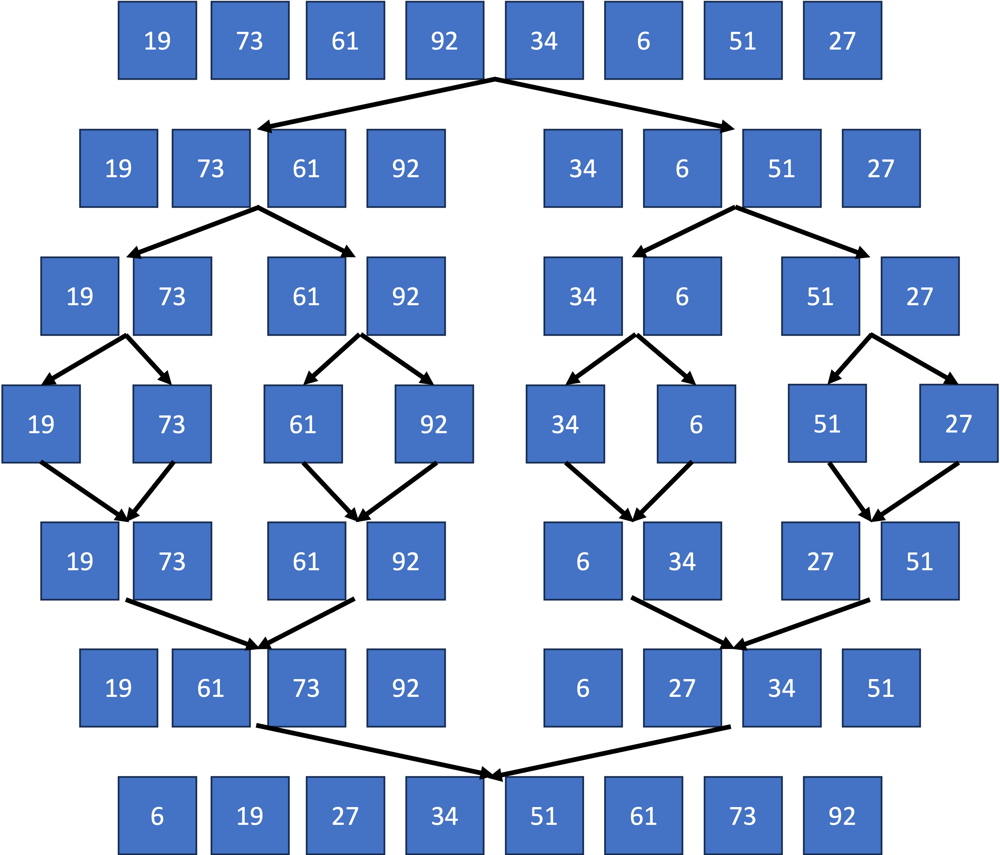

Merge sort is a more complicated but sometimes more efficient sorting algorithm.
Merge sort is a more complicated but sometimes more efficient sorting algorithm.
The steps to do a merge sort are as follows:
1. Keep splitting the list in half until all sublists contain one item
2. Repeatedly merge and sort pairs of sublists into larger sublists
3. Eventually, the whole list will be reconstructed in order
Diagram 1 shows an example run of merge sort on a list of numbers.
 Diagram 1
Diagram 1

 Which sorting algorithm is more efficient in the worst case: merge sort or bubble sort?
Which sorting algorithm is more efficient in the worst case: merge sort or bubble sort?
Merge sort (with a worst case time complexity on the order of O(n log n)) is much more efficient than
bubble sort (worst case on the order of O(n2)), especially for larger lists. However, if the
list is already close to sorted, you may find that bubble sort performs better than merge sort (see the graph on the next page).